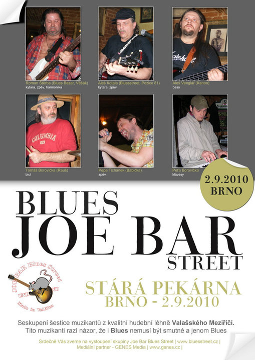

Tak tu máme konečně zase jeden zážitek kulturního ražení, a to ne jen tak ledajaký ;-) ! Do Brna se poprvé vypravila naše oblíbená bluesová kapela z Valmezu, s kterou jsme se seznámili loni v létě na festivale Hrachovka. Jejich vystoupení bylo vůbec tím prvním, co jsme na festivale viděli a slyšeli, a ačkoliv jsme v Hrachovci načerpali ještě spoustu dalších nezapomenutelných zážitků (třeba vystoupení Jardy Uhlíře, na které dodneška vzpomínám jako na nejlepší koncert v mém životě :D!!!), blues nás zaujalo a z webovek kapely jsme si záhy postahovali jejich songy. Písničky jsem si brzo oblíbila, zvlášť když jsem je poslouchala v Péťově chraplákovém podání o:D ! Našimi favority se stal především “Prašivej pes” a “Broadway”. Když jsme se doslechli, že Joe Bar Blues Street se na podzim chystá do Brna, samozřejmě jsme si koncert nemohli nechat ujít !
Na Starou Pekárnu jsem se chystala poprvé, a protože jsem byla varována, že tam mají drahé pivo (nojo, Plzeň je ale Plzeň O:-)…), načala jsem se ještě cestou petkovým Zlatopramenem, který připravil dobré podloží pro koncertní atmosféru :-)…Jako obvykle jsme měli s Péťou menší zpoždění, ale nic jsme nepromeškali a Zuzejk dokonce dorazila ještě o nějakou chvilku po nás (už ví, proč nechodit na čas :D). Sotva si stihla dojít na bár pro pívo, koncert začal. Atmosféra Staré Pekárny se mi hodně líbila, ale byla jsem dost překvapená sporadickou účastí. Kapela si pro koncert nevybrala úplně nejvhodnější datum, protože studentům už předchozí den začala škola a vysokoškoláci ještě do Brna nedorazili. Navíc tady ve Štatlu zatím nejsou Joe Bar Blues Street moc známí. Tahle malá vada na kráse se ale nakonec ukázala být i výhodou, protože jsme si alespoň mohli užít celý koncert v příjemné komorní atmosféře. V průběhu první série jsme si skočili k baru doplnit hladinku, abychom se vzápětí mohli “vrhnout” na parket za zvuků naší oblíbené “Broadwaye”:-)…Náš pokus o roztančení Pekárny kapela ocenila a hned v další sérii nás příjemně překvapila písničkou na přání :-) ! Péťa totiž stránky Joe Bar Blues Street na Facebooku vytrvale spamoval, takže si ho kapela zapamatovala a věnovala mu ten večer svůj nejlepší song - Prašivýho psa!!! Teď teprve začala ta správná jízda ! Kapela si koncert očividně užívala a my s ní. Naše nadšení inspirovalo i ostatní dosud sedící posluchače, takže se prostor před pódiem rychle zaplnil.

Plakát
V další přestávce si pak k našemu stolu přišel sednout basák následovaný bubeníkem, dali jsme řeč, jak jsme vlastně Joe Bar Blues Street objevili, co studujeme v Brně a tak, a po koncertě jsme prohodili pár slov i s dalšími členy kapely. Péťa si odnesl jako vzpomínku na tento výborný večer taky podepsaný pivní tácek :-) ! Před Starou Pekárnou se nám pak i podařilo úspěšně si servat plakát kapely, který nám už visí v našem novém bytečku na toaletě (je to čestné místo :) !!!!). Koncert byl opravdu skvělý a moc jsem si ho užila. Všem, kteří chtějí objevit kouzlo blues můžu kapelu Joe Bar Blues Street jen doporučit ! Pro Brňáky upozorňuju na koncert 13.9. v Metru a pro ty, kteří mají Brno z ruky alespoň přihazuju odkaz na kapelové webovky, kde si můžete jejich písničky poslechnout a sami zhodnotit :-)… http://www.bluesstreet.cz/. A mimo jiné se tu můžete dočíst také o atmosféře vystoupení na Staré Pekárně z pohledu samotné kapely ;-)…
Komentáře (2)
Komentáře jsou uzavřené.